HttpPost
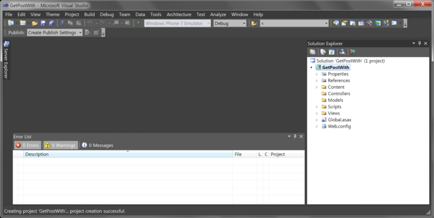
우선 뭐, Models 폴더 안에 상콤하게 모델을 만들었습니다.
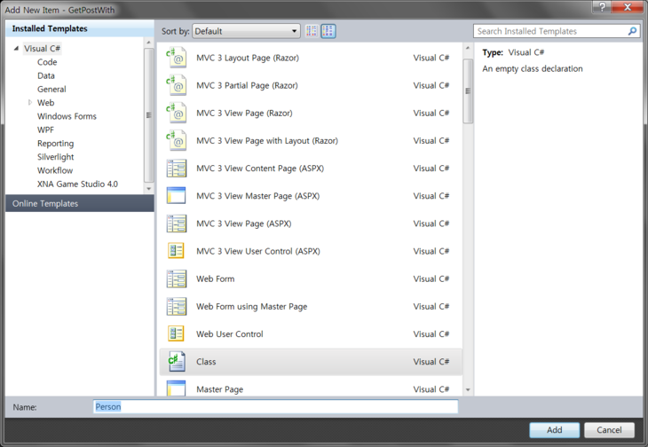
대충대충 만들어 두었습니다.
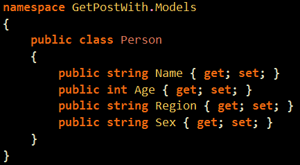
그리고 이제 HomeController로 왔답니다.
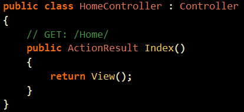
이제 오늘의 주제를 볼 차례인데요.
바로 HttpPost 랍니다.
액션이 2개가 만들어 졌고 각각의 녀석 앞에 [HttpGet]과 [HttpPost]라는 녀석이 들어가있답니다.
Get과 Post는 대충 생각하시면
우선 Get은 처음 들어가는 화면입니다.
그리고 데이터를 Get 하는 부분이지요.
데이터(모델)을 Get 하면 Post 페이지로 가게 된답니다.
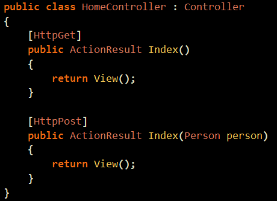
우선 간단하게 Get 페이지를 만들겠습니다.
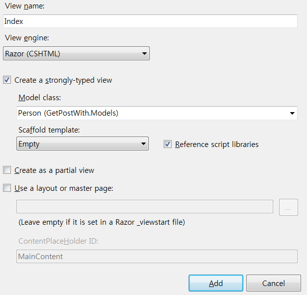
뿅뿅 만듭니다.
위에서 Model 선택해주었어요
참고적으로 모델 선택이 안 될 때가 가끔 있는데요.
상콤하게 빌드하시고 다시 실행하시기바랍니다. ㅎㅎ
어쨌거나
데이터를 Get 하기 위해서는 Form 이 필요하답니다.
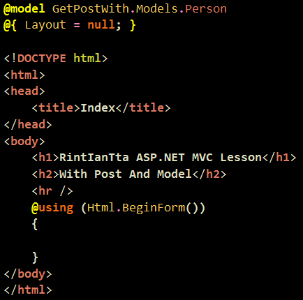
TextBoxFor 을 사용하면 , model을 이리저리 만져줄 수 있답니다. ㅎㅎ
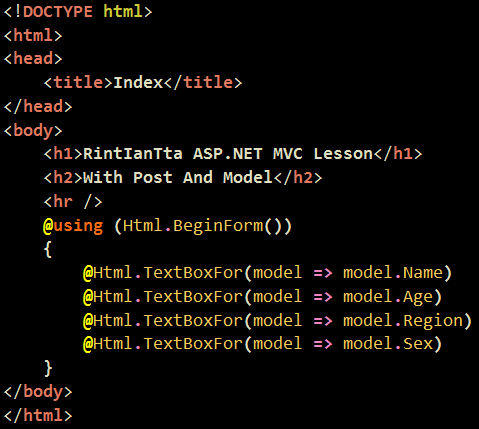
그리고 그냥 Submit 해주시면 됩니다.
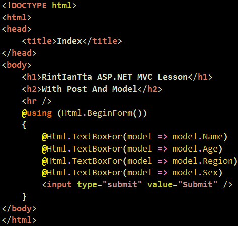
약간은 꾸며주겠습니다.
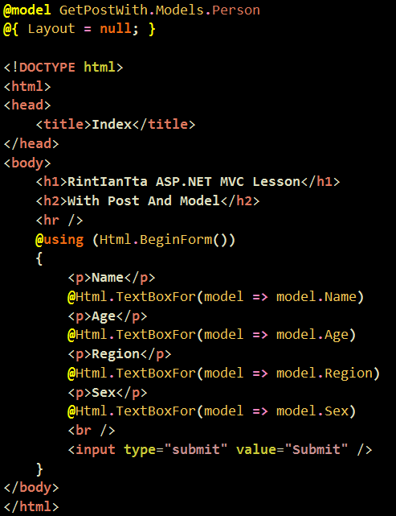
Post 페이지를 만드는 것은 나중에 하구요
간단하게 String 을 리턴해버리겠습니다.
Get 페이지에서 온 person 을 띄워주는 간단한 예제입니다.
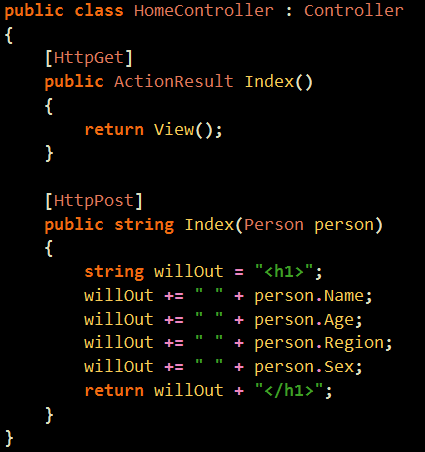
실행하고 데이터를 넣어줍니다.
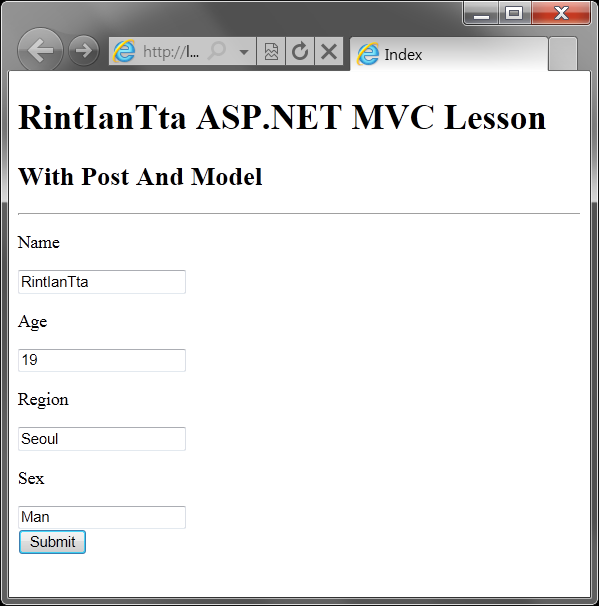
실행하면 뭐 오늘의 강의는 끝이나게되네요.
보실때 한번 URL을 살펴보시기 바라구요.
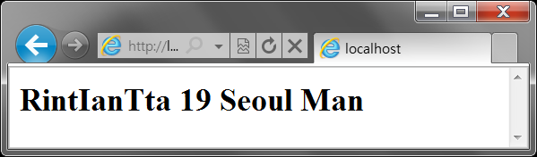